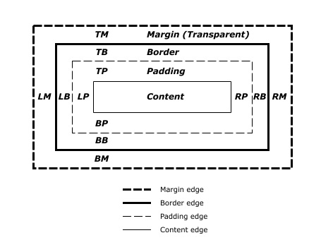
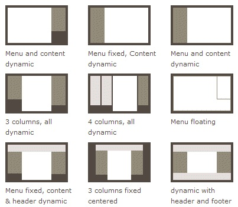
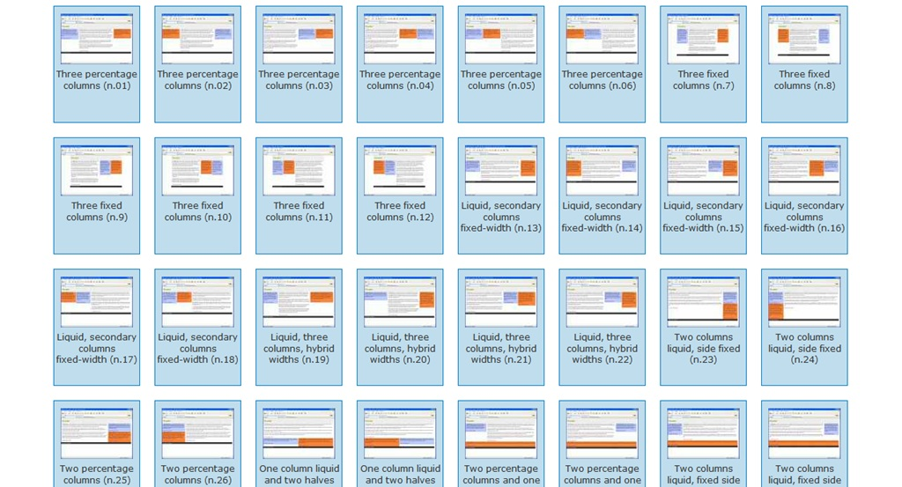

Web Development
Introduction to CSS
Paul Vesey Created using Reveal.js
Useless/Useful Information
Set your 'Folder Options' to show all files and file extensions in Windoze.

CSS
Websites can be broken down into three distinct layers
- Content
- Presentation
- Interaction / Behaviour
CSS
This is typically achieved by:
- Content: <html>
- Presentation: CSS
- Behavior: JavaScript
CSS
Whilst this model may appear convenient, we find that if falls short of what is actually happening in standards HTML5 and CSS3.
In this section we are going to look at CSS
CSS Cascading Style Sheet
- Cascading Style Sheet
- Set of parameters that tells the browser how to style and layout your site
- CSS can be placed in-line or you can link to an external file
- Better to have an external file, although sometimes it is necessary to use in-line for other reasons
CSS Cascading Style Sheet
For the moment we are going to consider two aspects of presentation:
- Structure
- Style
Before we begin we need to have a look at how CSS is built.
Anatomy of CSS
The main components are the Selector, Attribute and Value
- Selector (
'p'); Attribute ('font-size') Value ('1em')
p {
font-size: 1em;
color: red;
line-height: 1.33em;
margin: 8px;
text-transform: none;
alignment: left;
}
CSS Selectors
CSS Selectors allow us to 'grab' an element in the DOM structure and do something with it; dependent on the elements attributes. Selectors are typically:
- element
<h1> - classes
.className - named
#maincontent
CSS Selectors
- DOM elements are typically those elements that we define within tags, such as the
<h1>,<p>, etc. - Classes are an attribute of an element that is defined by the web-author. Typically multiple elements would be assigned to a single class in order to allow for quick and consistent treatment.
<p class='info'> - Named Elements are similar to class except each element must have a unique identifier. When called in CSS only one element is effected. It is generally a bad idea to use named elements for CSS. It often leads to conflict with JavaScript requirements.
<a id='link1' href='\#'>
CSS Attributes and Values
- Attributes are characteristics of the HTML element that we can access and modify through CSS
- Attributes can be categorized into Element, Global and Event Attributes.
- Values are simply the legal settings for a particular attribute
- For instance color:
'color: green;'
Box Model
CSS utilizes what is known as the box model
CSS Layout Basics http://www.w3.org/
Box Model
- Content
- Padding (between Content and Boarder)
- Border (has width)
- Margin (between box and next box)
Each of these attributes can be assigned (amongst other things) a thickness.
Box Model - Positioning
Once we have the box, we can do things with it, such as send it left or right. This is referred to as floating
float: left;float: right;
Centering Objects is achieved by setting the margins
margin-left: auto;margin-right: auto;
Box Model - Border
We can also set border characteristics.
border-width: 5px;border-style: solid;border-color: green;border-radius: 10px;
Box Model - Padding
Padding is the space between the content and the border. Like many properties, it can be set in shorthand or longhand.
padding: 5px;(All padding 5px)padding-top: 5px;padding-right: 10px;padding-bottom: 15px;padding-left: 20px;padding: 5px 10px 15px 20px;(shorthand version)
Shorthand versions follow a clockwise model: 12, 3, 6, 9
CSS - the Units question
The most commonly used units in CSS are:
- \% - percentage
- em - equal to current font size
- px - pixel
- pt - point 1/72 inch
- cm/mm/in
Your unit choice should be based on what you are trying to do. For Responsive layouts, normally \% is best, wheras Fonts are better defined in em or pt.
CSS Practical Exercise

Questions?
CSS for Structure Grids
- When we look at websites and pages for any length of time, we soon realize that the content is normally laid out in a consistent manner.
- We can normally start to distinguish a pattern of content. In many cases if we look carefully we can discover a very clear repeating pattern.
- This pattern is often what is known as a Grid.
CSS for Structure Example

CSS Grid gramophone.co.uk
CSS for Structure Example
 [h]
[h]
CSS Grid gramophone.co.uk
CSS for Structure
In the past the 3 column layout was popular. This was extended to include a header or banner area, and footers also. Over the years many permutations of the 3 column layout have been developed as can be seen in the following slides.
CSS for Structure 3-Column
CSS Layout Basics smashingmagazine.com
CSS for Structure 3-Column
CSS Layout Basics - tripwiremagazine.com
Grid System
thegridsystem.org provides some information on Grids.

Grid System
thegridsystem.org provides some information on Grids.

3-Column v Grid System
There is nothing wrong with either system. As usual it is a design choice to use one or the other. Some of the factors that influence the decision are:
- 3-column is usually very easy to implement
- Grid system can be considered complex to learn
- Consistent placement of media elements can present a problem on 3-col systems.
- Simple 3-col systems can be very easily made responsive
The reason we are getting into Grids is that they can be set up as a 3-col layout.
Anatomy of a Grid System
For the most part a Grid system consists of:
- HTML, which establishes the division
<div>structure - CSS, which controls the placement of the divs when rendered in the browser
Anatomy of a Grid System (HTML)
HTML Extract:

Anatomy of a Grid System (CSS)
CSS Extract:

Grid System Things to Note
- Grid Systems make extensive use of CSS classes
- CSS
displayattribute is used extensively - Grids often make use of a number of style sheets
- They are very easy to break if you don't know what you are doing
- The most common width used is 960 pixels
- Grids can be easily adapted for multiple screen sizes
CSS display Attribute
The display attribute tells the rendering engine how to layout your element. These are the ones used most often.
display: none; /* Don't show the element*/
display: block; /* Show the element as a block; typically one block above another*/
display: inline-block; /* Place elements beside each other*/
display: grid; /* Experimental, grid is here to stay!?*/
Why 960?
960 has been around for a while. It has persisted for a number of reasons
- 960 is easily divisible by 16 and 12, therefore giving easy 12 column and 16 column layouts
- Smartphones and Tablets are tracking as the web device of choice
- 960 is the optimum size for devices with 1024 width once you consider the browser container
960 will not be around forever. There are talks of 976 and 972 and larger. All in all it is a useful size that give us a solid framework.
CSS Media Sizes
Screen sizes on devices are a movable feast. It is simply not possible to cater for every possible combination of device. A few simple start points are however:
- 960 px, general norm at present
- 1024px, iPad landscape (covered in 960)
- 768px, iPad portrait
- 480px, Smartphone landscape
- 320px, Smartphone portrait
http://css-tricks.com/snippets/css/media-queries-for-standard-devices/
It makes sense to break a point or two before this.
Class Exercise Simple Grid
We are going to create this;

But before we do....
Using an External Stylesheet
In order to make use of your css file you simply include a link to your style sheet in the header section of your HTML
...
<head>
<link rel='stylesheet' type='text/css' href='mystyle.css'>
</head>
...
<p>This is some text that I have styled</p>
...
CSS Good Practice
For maintenance reasons you should include a TOC and organize your CSS file
/*-------------------------------------
Table of contents
1. Reset
2. Typography
3. Basic layout
4. Widgets
5. Media items
6. Forms
7. Media queries
8. IE specific styles
---------------------------------------*/
CSS Good Practice
It is also a good idea to re-set all of the margins and padding to zero to make sure that your layout is built cleanly.
* {
margin: 0;
padding: 0;
}
A Few Tips Floats
'clear: both;'or'clear: left;'will force your content onto the next line.- The height of floated elements is invisible to a containing
<div>. The fix for this is to create an empty div at the end of our content and style it to clear all floats. - Adding
'overflow: hidden;'to the containing div will have the same effect
Calculating 960 elements
Recall the box model: the width of an element is a combination of the margin, border and content}.
Width = margin + border + padding + content + padding + border + margin
Class Exercise Simple Grid
Simple CSS Grid
Questions?
CSS Fonts
- CSS3 greatly improved font handling
- Aspects of the standard are still in progress
- We still have some problems with OS specific fonts
CSS Fonts Design
There are four main font types used in web.
- Serif
- San-Serif
- Monospace
- Cursive

Terms in Typography

CSS Fonts
There are 3 main ways to access fonts for webpages
- Embedded and Operating System (tends to be OS specific)
- Google Webfonts, similar to site server, but Google does the hosting
- Site Server based specific, that have to be downloaded when browsing
Embedded & OS
- Serif, San-Serif, Monospace, and Cursive should be defined for every browser, and are based on operating system fonts. You do not need to do anything to load them.
- They are the most reliable
- They should always be used as a fall-back when defining fonts.
- Stick to Web Safe fonts. See http://www.w3schools.com/cssref/css\_websafe\_fonts.asp
Embedded & OS Code
CSS is then typically:
font-family: Verdana;
Note: this will work, but is poor practice as no fallback has been provided
Google Fonts
If you want something more you can look at Google Fonts
- Google Fonts provides a mechanism to access fonts, and have them rendered on the user's browser
- Involves adding a line of HTML for each Google Font
- Can add a considerable amount of time to page loads.
- Google is in the driving seat. If they drop or interrupt the service, your site will be effected.

Google Fonts Code
HTML is typically:
<link rel='stylesheet' type='text/css'
href='http://fonts.googleapis.com/css?family=Henny+Penny'>
Google Fonts Code
CSS is then typically:
font-family: 'Henny Penny';
The HTML will load the font. Once loaded the CSS can then use it. For this to work, the HTML must load the Font before the CSS.
Alternative Google Font Load
@import can be used directly in the CSS file to load a Google font. Code is then typically:
@import url(https://fonts.googleapis.com/css?family=Henny+Penny);
...
font-family: 'Henny Penny', cursive;
...
This is a better approach, as it decouples the HTML from the CSS
Server Based Fonts
Another option is to look at having fonts on your server
- Slightly clunky implementation due to browser compatibility issues
- Gives full control to the web author
- Generally faster than Google Fonts, but slower than embedded or OS.
Server Based Fonts
There are a number of different font formats. The most common are:
- TrueType
(.ttf) - Open Type Format
(.otf) - Web Open Font Format
(.woff) - Embedded Open Type
(.eot) - SVG
(.svg)
Server Based Fonts @font-face
Fonts are loaded using CSS @font-face. Simple syntax is:
@font-face {
font-family: teleindicator;
src: url(fnt/teleindicadores1.ttf);
}
Server Based Fonts @font-face
The font can then be called in the normal CSS way using:
font-family: teleindicator;
Server Based Fonts @font-face
There is an issue however in relation to browser compatibility. Not all browsers implement all of the various font types.
This means that we have to load a number of different font formats in order for our font to be rendered by all browsers.
@font-face {
font-family: ralewaythin;
src:
url(fnt/raleway_thin-webfont.otf) format('opentype'),
url(fnt/raleway_thin-webfont.woff) format('woff'),
url(fnt/raleway_thin-webfont.ttf) format('truetype'),
url(fnt/raleway_thin-webfont.svg) format('svg');
}
Good Practice CSS Font call
We need to provide support for a variety of operating systems. To achieve this we normally specify a number of fonts in sequence. When rendering, the browser will look for the first, then the second and finally the third.
In the example below, Arial will be picked up by Windows, Helvetica by iOS, and failing either of those the embedded sans-serif font will be used.
h1, h2, h3{
font-family: Arial, Helvetica, sans-serif;
}
Note on Design
- Do not mix serif, sans-serif etc unless there is a very good reason to do so.
- Do not use many fonts; the object of the exercise is to present information in a readable format; not showcase the web developers expertise
- Make sure your font choices are legible
- Provide good contrast between the font and the background
- Pick a font that enhances the message: Comic Sans for a Bank anyone?
Questions
Bootstrap - Mobile First Design
- Bootstrap was developed by Mark Otto & Jacob Thornton at Twitter in 2010.
- The name Twitter Bootstrap is sometimes still used.
- It is a front end framework based on HTML, CSS, and JS.
- It also uses Less and Sass
Example

Mobile First
Mobile First puts small devices at the centre of the design process. A hierarchy of devices screen sizes from small to large is used. Bootstrap contains the following:
- HTML5, CSS3, and JavaScript
- 12 column grid system
- Styling for all major, and most minor HTML elements
Responsive Grid
Responsive functionality by setting column widths for each screen type
- xs - eXtra Small, i.e. Phones
- sm - Small, i.e. Tablets
- md - Medium Devices, i.e. Desktops ≥ 992px
- lg - Large Devides, i.e Desktops ≥ 1200px
<div class="col-xs-12 col-sm-6 col-md-6 col-lg-3">...</div>
Default Behaviour
Without setting device columns, Bootstrap will fallback gracefully. In the examples shown below, only col-md-* was used.
Large Screen

Small Screen

Getting Boostrap
- Bootstrap can be obtained from getbootstrap.com/getting-started/#download
- You can also link to the CDN at bootstrapcdn.com
Note on CDNs: Be aware that CDNs do not have universal availability. CDNs hosted by Google are (as of Nov 2015) blocked in China
Div Structure
Bootstrap uses a .row class to clear floats. This approach tends to be easier for novice users to grasp.
<div class="row">
<div class="col-xs-12 col-md-4">...</div>
<div class="col-xs-12 col-md-4">...</div>
<div class="col-xs-12 col-md-4">...</div>
</div>